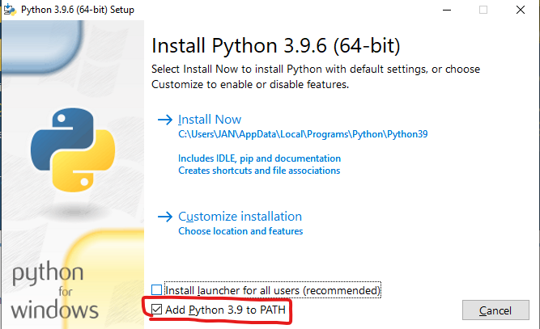

Installing Python and MIKE IO
Contents
Installing Python and MIKE IO¶
Download Python from https://www.python.org/downloads/
Install Python (Select Add Python to PATH) 
(On PCs without MIKE Zero) Install VC redist
Open command prompt (
cmd.exe)Install MIKE IO (
pip install mikeio==1.0a2) - Alpha release of MIKE IO 1.0Install matplotlib (
pip install matplotlib)Install JupyterLab (
pip install jupyterlab)Start Jupyter lab (
jupyter lab)You are now ready to start working with MIKE IO in Python
Installation example¶
Test your installation¶
Open command prompt (
cmd.exe)Start python (
> python)Run the following lines of code:
import sys
import numpy as np
import pandas as pd
import matplotlib as mpl
import mikeio
print(f"Python version: {sys.version}")
print("NumPy: " + np.__version__)
print("Pandas: " + pd.__version__)
print("Matplotlib: " + mpl.__version__)
print("MIKE IO: " + mikeio.__version__)
Can you say yes to the following questions?
My Python version is 3.8 or greater
My NumPy version is 1.18 or greater
My pandas version is 1.0 or greater
My matplotlib version is 3.2 or greater
My MIKE IO version is 1.0 or greater